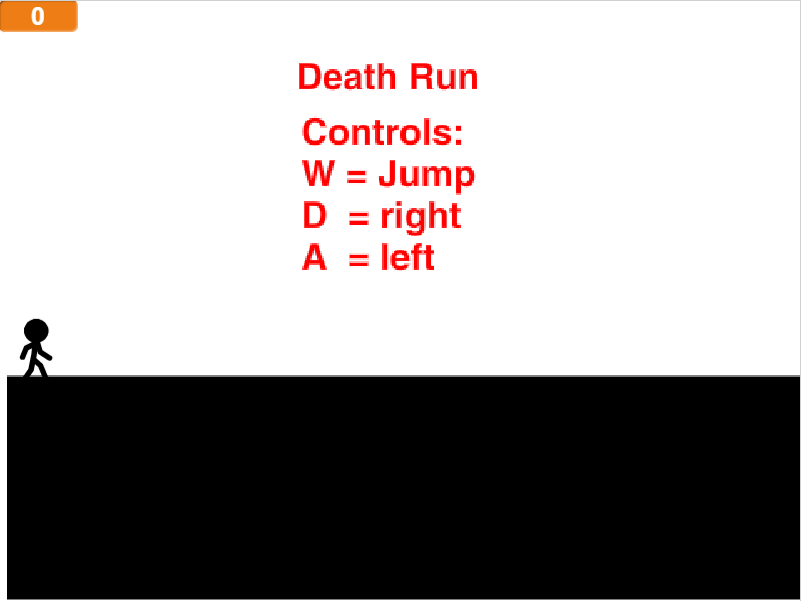
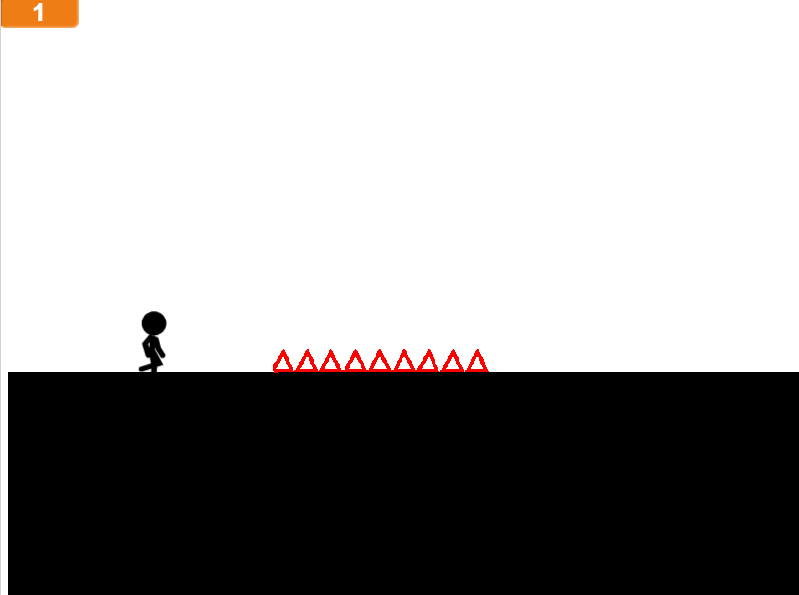

Youssef Mikhail
Death Run

Game Link
The game is about a person who tries to run and survive to win
the game. The scoring system is the levels as every level you pass
it increase by 1.In level 4, there is a bridge that changes randomly
from 6 costumes. This game gets difficult through the levels; the more
levels you pass, the harder it gets. The game ends when you pass all the levels but, you
restart all over if you die.
I created this game because I saw a game before about the same
thing and I really liked it. Two succcessful points in my game were
how the main character moves and how he dies. However, two obstacles
that I had were how to get spirts disapear in time and how to jump.
I overcome them by getting help and a lot of me trying. If I had more
time, I would add more levels and better jumping.
This code allows the level to change. As the level number increase,
the level change which is the background. so, if leve=4 then, the level
will change to level 4 background.